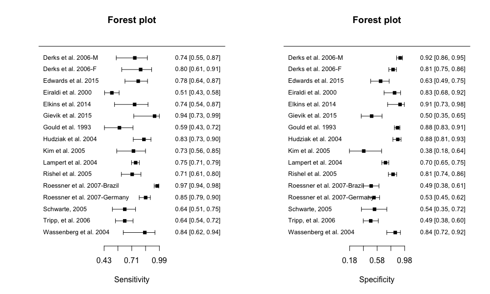
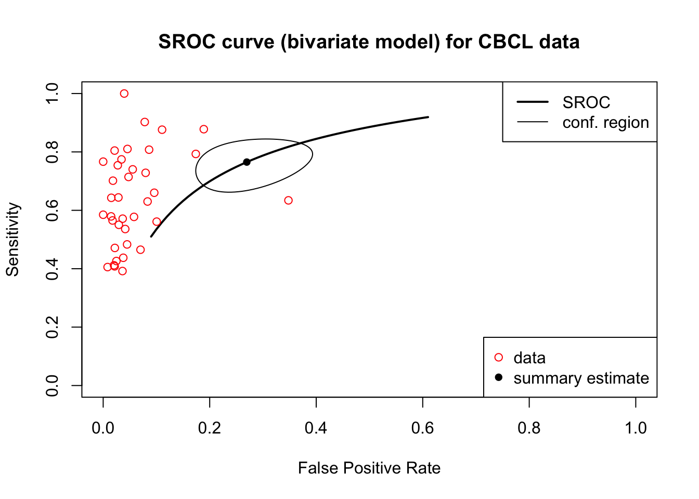

Exercise 3 - CBCL
As with Exercise 1 and 2, we need to read in the csv file first. Table 3.3 is the first 5 rows of CBCL data.
| test | study_id | TP | FP | FN | TN |
|---|---|---|---|---|---|
| CBCL | Derks et al. 2006-M | 20 | 14 | 7 | 151 |
| CBCL | Derks et al. 2006-F | 20 | 36 | 5 | 155 |
| CBCL | Edwards et al. 2015 | 38 | 17 | 11 | 29 |
| CBCL | Eiraldi et al. 2000 | 88 | 6 | 85 | 30 |
| CBCL | Elkins et al. 2014 | 17 | 2 | 6 | 21 |
3a. Univariate Analysis
Use the madad command to conduct a meta analysis by using univariate model, and save the results in the object “madad.CBCL”
## Descriptive summary of CBCL with 16 primary studies.
## Confidence level for all calculations set to 95 %
## Using a continuity correction of 0.5 if applicable
##
## Diagnostic accuracies
## sens 2.5% 97.5% spec 2.5% 97.5%
## [1,] 0.741 0.553 0.868 0.915 0.863 0.949
## [2,] 0.800 0.609 0.911 0.812 0.750 0.861
## [3,] 0.776 0.641 0.870 0.630 0.486 0.755
## [4,] 0.509 0.435 0.582 0.833 0.681 0.921
## [5,] 0.739 0.535 0.875 0.913 0.732 0.976
## [6,] 0.941 0.730 0.990 0.500 0.348 0.652
## [7,] 0.585 0.434 0.722 0.876 0.832 0.911
## [8,] 0.833 0.726 0.904 0.880 0.809 0.927
## [9,] 0.727 0.558 0.849 0.385 0.177 0.645
## [10,] 0.749 0.708 0.787 0.701 0.648 0.750
## [11,] 0.714 0.605 0.803 0.811 0.743 0.865
## [12,] 0.968 0.938 0.984 0.493 0.380 0.607
## [13,] 0.851 0.786 0.898 0.533 0.449 0.615
## [14,] 0.639 0.514 0.748 0.542 0.351 0.721
## [15,] 0.639 0.545 0.723 0.487 0.378 0.597
## [16,] 0.842 0.624 0.945 0.843 0.720 0.918
##
## Test for equality of sensitivities:
## X-squared = 152, df = 15, p-value = <2e-16
## Test for equality of specificities:
## X-squared = 194, df = 15, p-value = <2e-16
##
##
## Diagnostic OR and likelihood ratios
## DOR 2.5% 97.5% posLR 2.5% 97.5% negLR 2.5% 97.5%
## [1,] 30.82 11.111 85.47 8.73 5.044 15.11 0.283 0.149 0.537
## [2,] 17.22 6.057 48.97 4.24 2.980 6.04 0.246 0.112 0.541
## [3,] 5.89 2.398 14.48 2.10 1.398 3.15 0.356 0.202 0.627
## [4,] 5.18 2.051 13.06 3.05 1.449 6.43 0.590 0.478 0.728
## [5,] 29.75 5.310 166.69 8.50 2.212 32.67 0.286 0.142 0.575
## [6,] 16.00 1.924 133.03 1.88 1.341 2.64 0.118 0.017 0.809
## [7,] 10.01 4.871 20.57 4.74 3.142 7.14 0.473 0.328 0.683
## [8,] 36.79 15.647 86.48 6.96 4.211 11.52 0.189 0.110 0.326
## [9,] 1.67 0.430 6.46 1.18 0.733 1.91 0.709 0.293 1.718
## [10,] 7.02 5.083 9.70 2.51 2.097 3.00 0.357 0.300 0.426
## [11,] 10.75 5.701 20.27 3.79 2.663 5.38 0.352 0.245 0.505
## [12,] 29.17 12.539 67.84 1.91 1.516 2.40 0.065 0.032 0.135
## [13,] 6.51 3.728 11.37 1.82 1.504 2.21 0.280 0.186 0.421
## [14,] 2.10 0.804 5.46 1.40 0.868 2.24 0.666 0.405 1.095
## [15,] 1.68 0.924 3.05 1.25 0.959 1.62 0.742 0.527 1.043
## [16,] 28.67 6.753 121.69 5.37 2.760 10.44 0.187 0.066 0.533
##
## Correlation of sensitivities and false positive rates:
## rho 2.5 % 97.5 %
## 0.265 -0.266 0.6723b. Forest plot
Then use the forest command to draw the forest plot. The split.screen function is used to split a plotting window into different rectangular sections called “screens”. Figure 3.5 is the forest plot of CBCL data.
split.screen(c(1,2))
screen(1)
forest(madad.CBCL, type = "sens", xlab = "Sensitivity", cex = .8, snames = CBCL$study_id)
screen(2)
forest(madad.CBCL, type = "spec", xlab = "Specificity", cex = .8, snames = CBCL$study_id)
close.screen(all.screens = T)

Figure 3.5: The forest plot of CBCL data.
3c. Bivariate Analysis
Secondly, use the reitsma command to conduct a meta analysis by using bivariate model, and save the results in the object “bi.CBCL”
## Call: reitsma.default(data = CBCL)
##
## Bivariate diagnostic random-effects meta-analysis
## Estimation method: REML
##
## Fixed-effects coefficients
## Estimate Std. Error z Pr(>|z|) 95%ci.lb 95%ci.ub
## tsens.(Intercept) 1.181 0.208 5.681 0.000 0.774 1.589
## tfpr.(Intercept) -0.996 0.230 -4.335 0.000 -1.447 -0.546
## sensitivity 0.765 - - - 0.684 0.830
## false pos. rate 0.270 - - - 0.190 0.367
##
## tsens.(Intercept) ***
## tfpr.(Intercept) ***
## sensitivity
## false pos. rate
## ---
## Signif. codes: 0 '***' 0.001 '**' 0.01 '*' 0.05 '.' 0.1 ' ' 1
##
## Variance components: between-studies Std. Dev and correlation matrix
## Std. Dev tsens tfpr
## tsens 0.744 1.000 .
## tfpr 0.858 0.372 1.000
##
## logLik AIC BIC
## 17.589 -25.178 -17.849
##
## AUC: 0.812
## Partial AUC (restricted to observed FPRs and normalized): 0.78
##
## HSROC parameters
## Theta Lambda beta sigma2theta sigma2alpha
## 0.171 2.197 0.144 0.438 0.8023d. SROC
## SROC ##
plot(bi.CBCL, sroclwd = 2, main = "SROC curve (bivariate model) for CBCL data", pch = 16)
points(fpr(nishimura), sens(nishimura), pch = 1, col = "red")
legend("bottomright", c("data", "summary estimate"), pch = c(1,16), col = c("red","black"))
legend("topright", c("SROC", "conf. region"), lwd = c(2,1))

Figure 3.6: The SROC of CBCL data.